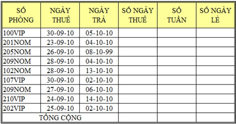

Bài tập Excel 8:
Nhập và trình bày bảng tính như sau:

Yêu cầu:
Câu 1: Tính số ngày thuê = NGÀY TRẢ - NGÀY THUÊ
Câu 2: Tính số tuần, số ngày lẻ (dùng hàm INT, MOD)
Câu 3: Tính tổng số ngày thuê, tổng số tuần, tổng số ngày lẻ (dùng chức năng AutoSum)